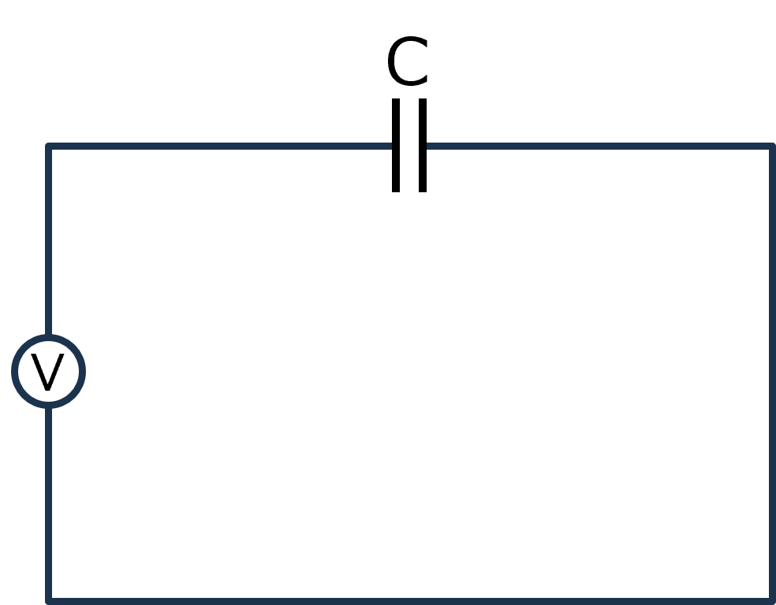
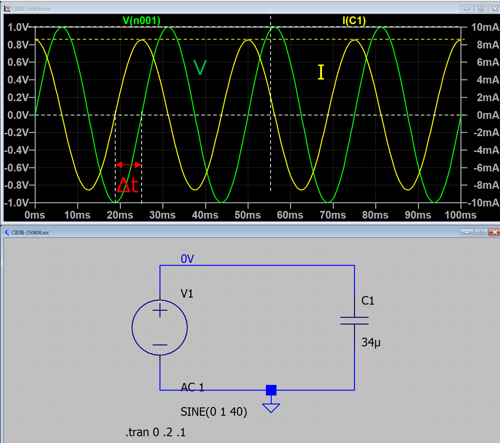

回路-04
コンデンサ（容量）
コンデンサの細かい原理は置いていおいて，その性質は，
容量は，電圧の時間変化に比例して電荷が変化する
ものと考えます．式で表すと，
\(\Large Q(t) = C \times V(t) \)
ここで，
Q : 電荷量 （C)
C : 容量 （F)
V : 電圧 （V)
となります．電荷と電流との関係は，
\(\Large I(t) = \displaystyle \frac{dQ(t)}{dt} = C \frac{dV(t)}{dt}\)
電圧は，
\(\Large V(t) = \displaystyle \frac{1}{C} \ \int I(t) \ dt \)
となります．
・交流電源

教科書には，電圧入力，と，電流入力，とありますが，今回はすべて，電圧入力，で考えます．交流電源（電圧）を加えた場合，
\(\Large V(t) = V_0 \ sin \ (\omega t )\)
となりますので，電流は，
\(\Large I(t) = \displaystyle C \frac{dV(t)}{dt} = C \cdot \omega \cdot V_0 \ cos \ (\omega t )\)
となります．三角関数の公式より，
\(\Large sin (a+b) = sin \ a \cdot cos \ b + cos \ a \cdot sin \ b\)
から，
\(\Large sin (a+ \frac{ \pi}{2} ) = sin \ a \cdot cos \ \frac{ \pi}{2}+ cos \ a \cdot sin \ \frac{ \pi}{2} = cos \ a \)
となるので，
\(\Large I(t) = \displaystyle C \frac{dV(t)}{dt} = C \cdot \omega \cdot V_0 \ cos \ (\omega t ) = C \cdot \omega \cdot V_0 \ sin \ \left(\omega t + \frac{ \pi}{2} \right)\)
となり，位相がπ/2，進む？遅れる？ことになります．
この進む，遅れるがV，I，どちらを基準に考えるかで逆転してしまうため，いつも混乱します．
なので，きちんと図示して考えていきます．
そこで，登場したのが，LTspice，です．
・LTspice
ここ，にDLサイトがあります．
ちょっと古めのインターフェースですが，いろいろな機能が備わっており，なかなか使い慣れてくると便利です．Mac版もありますが，どうもショートカットなどが違い，混乱します．
実際にC交流回路を作ってみてシミュレートしてみました．

条件は，
f = 40 Hz
C = 34 μF
V0 = 1 V
ということで，
\(\Large \omega = 40 \cdot 2 \cdot \pi = 251.3 \ rad/s \)
振幅
コンデンサ直下の電流値の振幅は，
\(\Large C \cdot \omega \cdot V_0 = 8.55 \ mA \)
と電流の振幅が計算どおりとなっていることがわかります．
位相
今回は，この計算は使わずに，0点同士の差から求めました．
\(\Large \Delta t = 6.25 \ ms \)
周波数は40 Hz，ですので，一周期が，1/40 = 25 ms.
\(\Large \phi= \frac{6.25}{25} \times 360 = 90 \ (degree) \)
と90度（π/2），ズレていることがわかります．
次ページは，インダクタについて考えていきます．